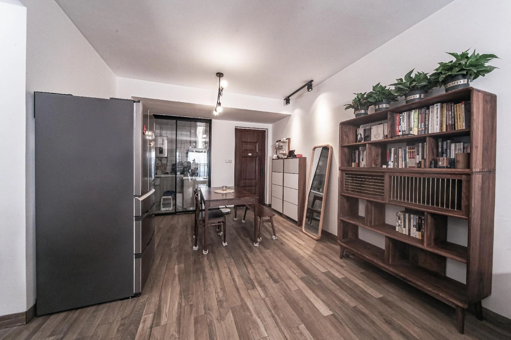
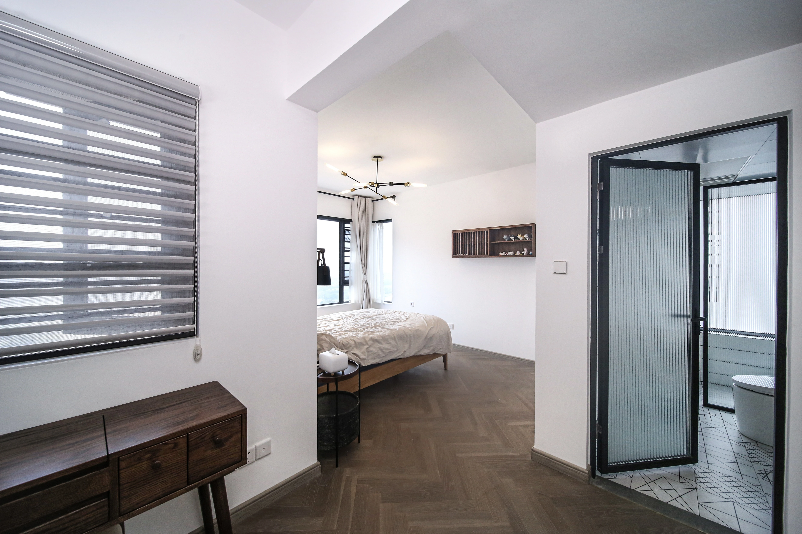
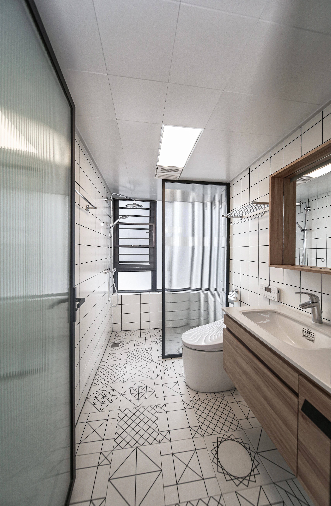
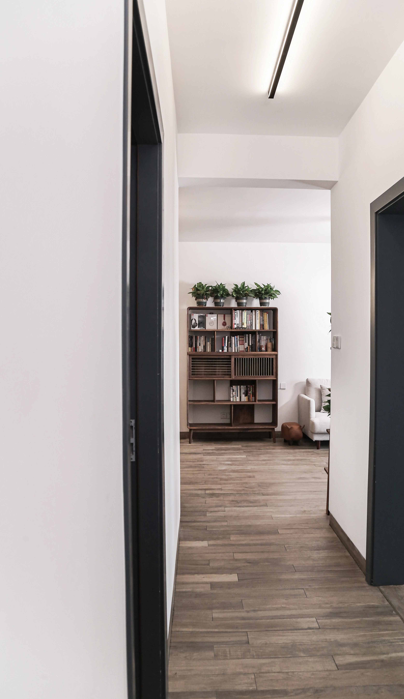
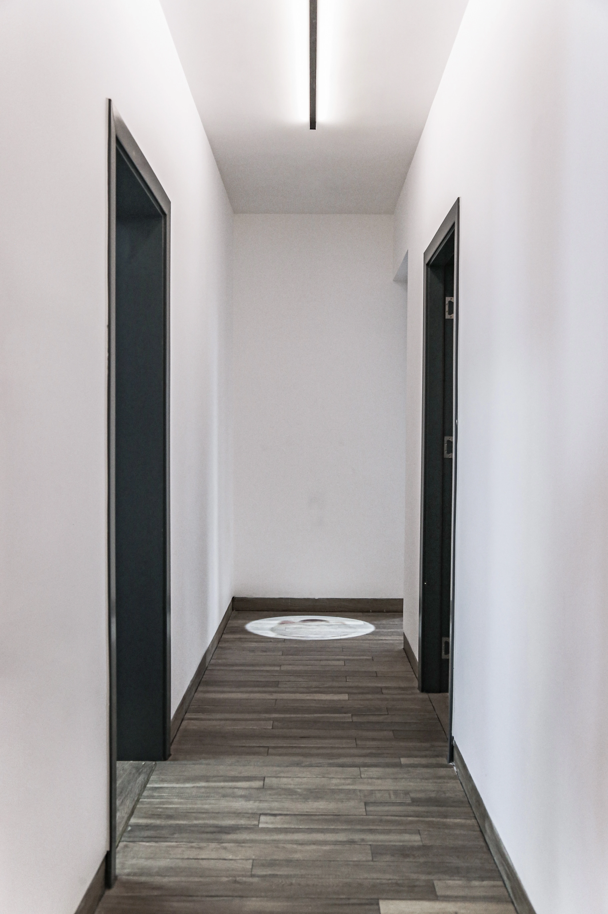
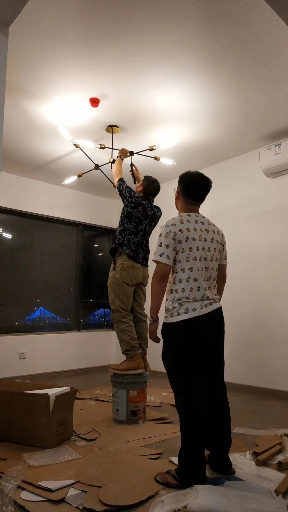

OPEN
THRESHOLDS
通透边界 Ranh giới thông thoáng
客厅、餐区、卧室、卫浴和走廊由一系列轻薄边界连接。 黑框玻璃门限定功能，却让视线与自然光继续穿行； 连续木地板、白色墙面和开放端景进一步减轻房间之间的分隔感， 使紧凑住宅呈现更长、更明亮的空间纵深。
Living, dining, bedroom, bathroom and corridor are connected by a sequence of light thresholds. Black-framed glass defines function while allowing sightlines and daylight to continue, giving the compact home greater depth and openness.
Phòng khách, khu ăn, phòng ngủ, phòng tắm và hành lang được kết nối bằng chuỗi ranh giới nhẹ. Cửa kính khung đen phân định chức năng nhưng vẫn cho phép ánh sáng và tầm nhìn xuyên suốt, giúp căn nhà nhỏ trở nên sâu và thoáng hơn.
ONE LONG
DOMESTIC FIELD.
木质书架没有被做成贴墙背景，而是作为客厅与餐区之间的空间锚点。 白色沙发、轻型茶几和通往阳台的自然光保持整体明亮， 生活物件则让公共区域呈现真实、松弛的使用状态。

FURNITURE
MAKES THE
THRESHOLD.
餐区没有依靠实体墙划分。 冰箱、餐桌与大型木书架共同形成可感知的界面， 同时保留从餐区看向客厅和后部空间的连续视线。
The dining area is defined by furniture rather than a solid partition. Refrigerator, table and timber bookcase establish a readable zone while maintaining visual continuity through the home.
Khu ăn được xác định bằng đồ nội thất thay vì tường đặc. Tủ lạnh, bàn ăn và kệ sách gỗ tạo nên một vùng rõ ràng nhưng vẫn giữ tầm nhìn liên tục trong căn nhà.
SEPARATE,
NOT ISOLATED.
卧室与卫浴通过黑框玻璃门和开敞洗手区建立层层边界。 门开启时，卧室、洗手台和淋浴区形成连续视野； 门关闭后，各空间仍保持清晰的功能和私密性。


CORRIDORS
AS SIGHTLINES.
两条狭长通道并不以装饰制造重点，而是依靠白墙、深色门框、连续地板和端部空间保持方向感。 门洞被控制在统一比例中，让走廊成为连接不同生活场景的视线通道。
White walls, dark door frames and continuous flooring turn narrow corridors into clear visual connections between rooms rather than leftover circulation.
Tường trắng, khung cửa tối màu và sàn liên tục biến hành lang hẹp thành tuyến nhìn rõ ràng kết nối các phòng, thay vì chỉ là không gian giao thông còn lại.



FROM
INSTALLATION
TO HOME.
施工记录保留了灯具、墙面和设备安装的最后阶段。 完工后，书籍、植物、家具与家庭物件进入空间， 证明这套通透关系不只适合空置拍摄，也能够承载真实生活。
The installation photograph records the final construction stage. Once books, plants and everyday objects enter, the spatial framework remains clear without suppressing lived-in character.
Hình ảnh thi công ghi lại giai đoạn hoàn thiện cuối cùng. Khi sách, cây xanh và đồ dùng hằng ngày xuất hiện, cấu trúc không gian vẫn rõ ràng nhưng không làm mất đi cảm giác sống thật.
Openness is not the absence of boundaries.
It is the careful design of how they connect.
而是重新设计边界之间的连接方式。
mà là thiết kế cẩn thận cách các ranh giới kết nối với nhau.